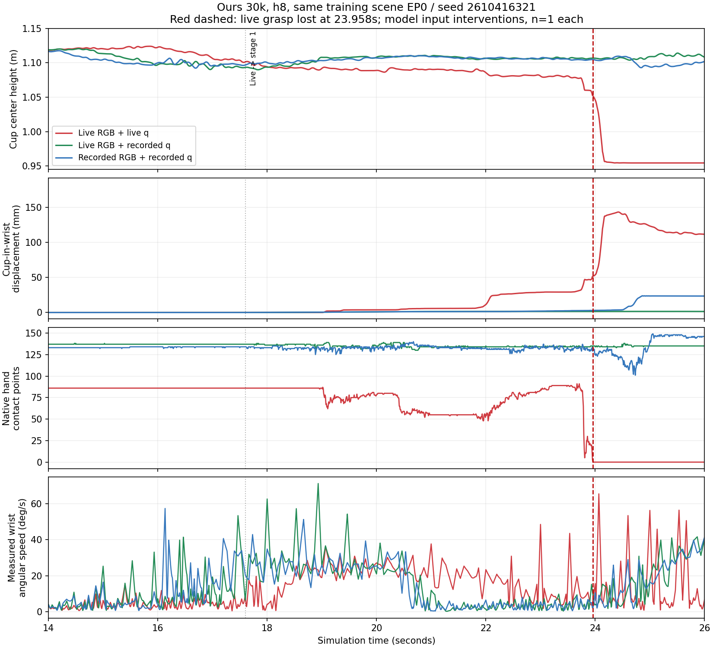
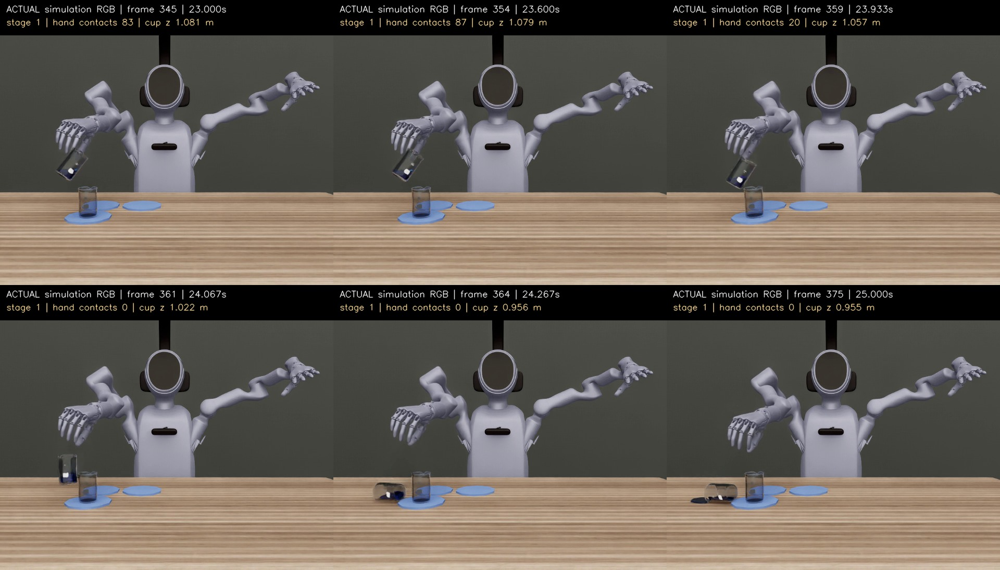
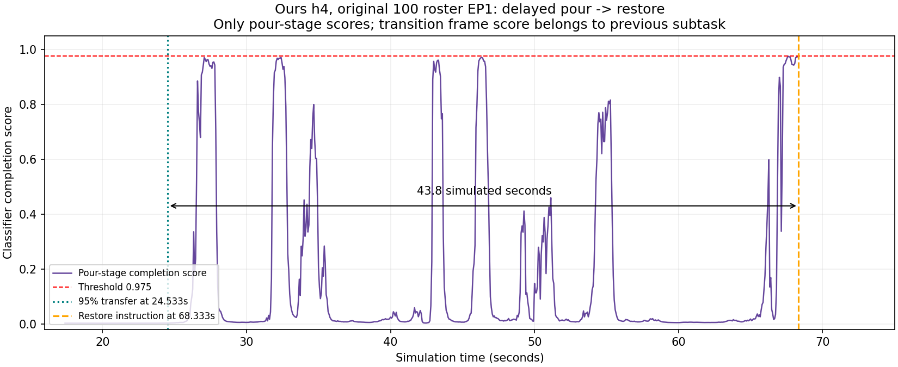
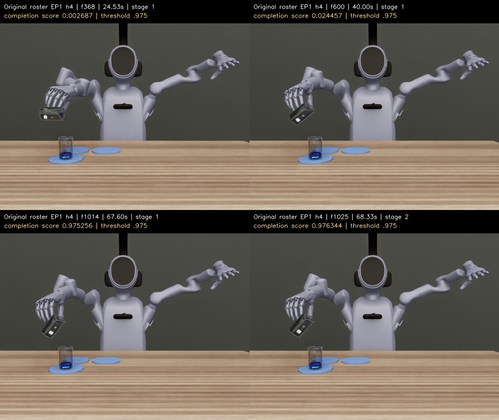

相同训练场景、模型和控制方式，拆开检查图像与实测关节角的影响。
| 方法 / 执行步数 | 实时图像＋实时关节 | 训练图像＋实时关节 | 实时图像＋训练关节 | 训练图像＋训练关节 |
|---|
实际输入对照 EP0 / h8 / Ours 实时输入：23.958秒仍在倾倒时，手杯接触持续归零；随后0.5秒杯中心下降97.6毫米、相对手腕移动119.4毫米。比较接触丢失前0.5秒与后0.1秒的窗口中位数，六指目标最大差仅0.000904弧度（整个窗口峰峰值约0.001424弧度），不能解释为主动张手；接触点数也不能当作握力。倾倒前13–15秒，杯对腕抓姿已比同场景训练关节角对照相差约10.45毫米、8.29°。这支持先定位抓持几何与闭环轨迹偏差；尚未证明摩擦系数、夹紧力或速度是唯一原因。
原200条 Ours 的前两次逻辑切换共298次，第二次≥0.975的当帧均已切换，额外等待0帧；不需要等执行完4/8步。Planner墙钟等待期间仿真不推进。存在分数偏迟的案例，也存在尚未满足95%转移条件却选放回指令的案例。
| Ours原100场景 | 已切放回 | 切放回但整条未达95% | 已达95%仍不切 | 同样的放回指令重复 |
|---|---|---|---|---|
| 4步 | 57 /100 | 29 /57 | 0 | 10条 /181次 |
| 8步 | 44 /100 | 24 /44 | 2条 | 8条 /71次 |
18/200条反复输出完全相同的放回指令，共252次。原运行时每次都会递增stage、重置阶段运行态、重建DAG并重置动作chunk。它属于独立的重复重入问题，不能据此断言更早的滑落都是它造成的。另有11条终止来自Planner缺少next_subtask前缀的格式拒绝，不能统称物理掉杯；原成功率与分类均保留。
典型慢切：原100场景 EP1 / 4步，24.53秒已倒完、68.33秒才切放回，延迟43.8秒。8步两条场景倒完后最高分分别0.97271、0.94522，均未越过0.975。另一方面，上表未完成95%的切换说明，统一降低阈值未必改善成功率。
后续修复应分别验证：相同指令重入时的状态处理、完成分数与任务进度的一致性、倾倒前抓姿与腕轨迹。此页记录排查结果，尚未改变生产模型、阈值或物理参数。
每种输入各一条，红线为实时输入。虚线23.958秒为持续接触丢失；曲线展示杯高、杯对腕位移、接触点数和实测腕角速度。训练关节角带有专家进度，不能当作传感接口故障的单一因果证明。




非实时输入在原训练序列结束后不再调用模型；仅保持最后一次预测 chunk 最后一个目标，相关尾段单独标注。若发生于这一段的完成，汇总也会标出，不能混同自主闭环成功。原训练序列 EP0 共717帧，EP56共640帧，均为15Hz。
三个 Mem-0 仅训练图像对照在这一边界触发诊断日志数组序列化错误，未完成的后续动作不补造，保留为U。更早的两组读取性能缺陷作业已整体中止，全部与本32条分开保存，未计为模型失败。
原生RPC图像和 measured_qpos 字段记录替换前的物理观测；另以 actual_inputs 日志逐帧验证模型真正接收到的图像SHA与13维实测关节角。两法保留各自训练时的正常化参数。物理审计重算120Hz粒子/接触，验证绝对关节目标、控制插值、15Hz时钟、场景相机及初始241步。